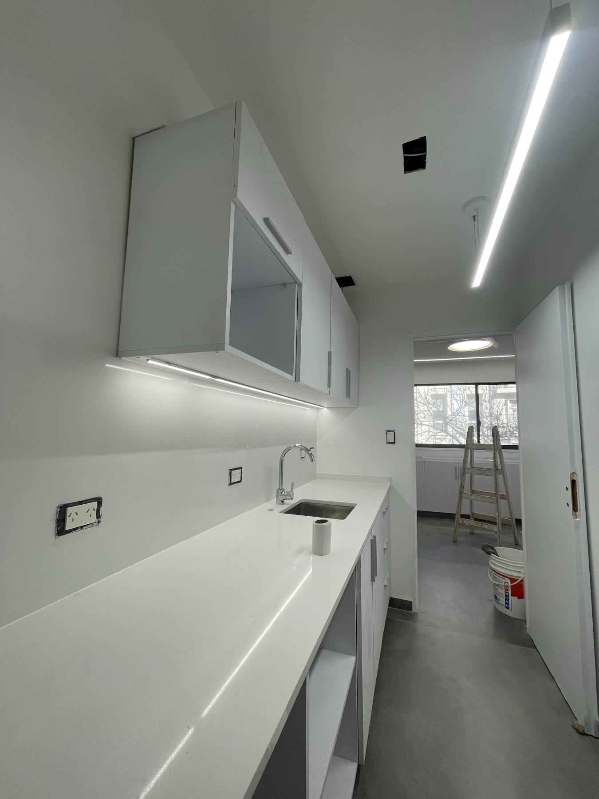

OBRA COMERCIAL · CALLAOPARA EMPEZAR DE CERO O RENOVAR
Instalaciones integrales
Planificamos la instalación eléctrica de viviendas, locales y espacios de trabajo, coordinando cada parte del sistema.
- Canalizaciones y cableado
- Tableros, protecciones y puesta a tierra
- Iluminación, tomas y alimentación de equipos